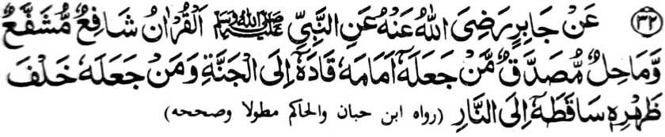

Hadith — 32

Miyakathitayan ko Jabir (Radhiallaho ‘Anho) a pitharo o Nabi (Sallallaho Alaihi Wasallam), “So Qur'an na manapa-at a phakasapa-at, go wakil a phakada-owa. Sa tao a tago-on niyan sekaniyan [a Qur'an] ko kasasangoran niyan na khidolog iyan ko Sorga, na sa tao a si-i niyan sekaniyan tagoa-a ko talikhodan niyan na pozangen niyan ko Naraka. ”
Aya ma-ana ini na, amay ka so Qur'an na sapa-aten niyan so tao, na so sapa-at iyan na tharima-an o Allah. So khapanapa-at o Qur’an na miya-aloy den ko ika 8 a Hadith: So Qur’an na phangeni niyan sa hadapan o Kokoman o Allah so kiporo o daradat o manga tao a ininggolalan niran sekaniyan, ago masiksa so manga tao a mindarainon non. O tago-a o tao ko kasasangoran niyan, ma-ana inggolalan niyan so manga sogo-an a madadalemon ko tenday o kapephaginetao niyan, na khidolog iyan si-i ko Sorga. Amay ka talikhodan niyan sekaniyan, ma-ana da niyan nggolalanen, na miyatangked so kakha-olog iyan ko landeng ko Naraka Pitharo angka-iya a mizorat [sangka-iya a kitab] a so kindarainonen ko Qur’an na ped pen sa kapethago-a ko Qur’an si-i ko talikhodan. Si-i ko madakel a Hadith na madakel a miya-aloy ron a manga tapa-os ko manga tao a inindarainon niran so Katharo o Allah. Si-i ko kitab a ‘Sahih-ul-Bukhari’ na aden a marawa a Hadith, a miya-aloy ron a so Rasulollah (Sallallaho ‘Alaihi Wasallam) na miyaka-isa na piyaki-ilay ron o Allah so saba-ad ko manga siksa o manga baradosa. Piyaki-ilay ron a tao a phagodalan sa lakongan so olo niyan sa diyangka a pekhapesa so olo niyan. Si-i ko kini-iza-an non o Rasulollah (Sallallaho ‘Alaihi Wasallam), na miya-aloy a giyangka-iya a tao na ininda-o ron o Allah so Maporo a Katharo Iyan, ogaid na da niyan batiya-a ko manga kagagawi-i ago da niyan nggolalanen ko manga kadadaon-dao, sa imanto na giyangkanan a siksa sa midadayon den taman ko Gawi-i a Kaphangokom. Phamangenin tano ko Allah sabap ko limo Iyan a pakalidasen tano Niyan ko siksa Iyan. Aya mata-an, na so Qur’an na tanto a mala a ontong sa sobo so kindarainonen rekaniyan na miyakapatot sa malipedes a siksa.